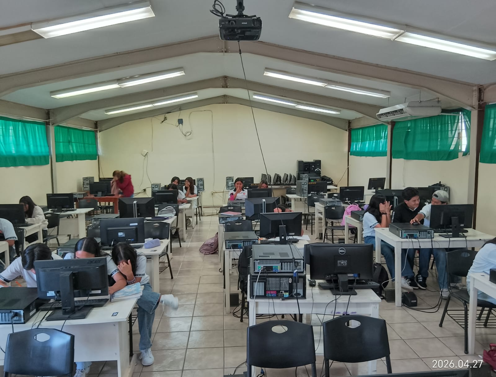
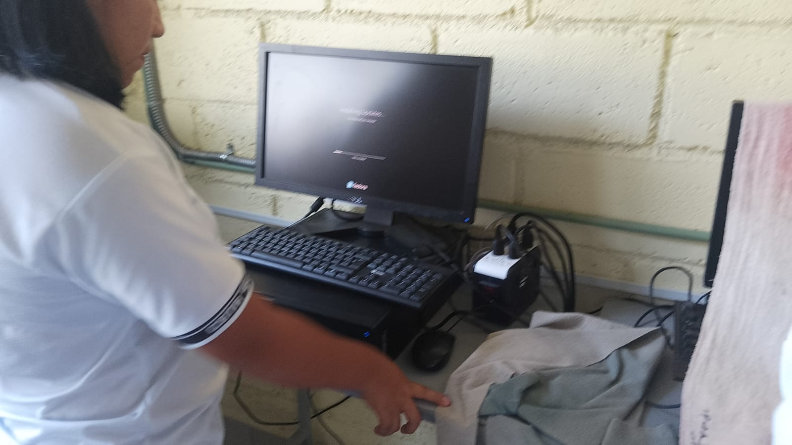
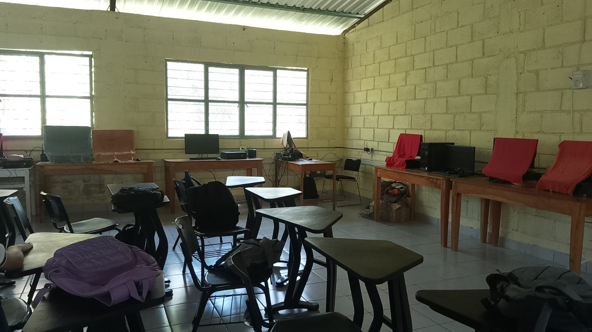

La carrera de Técnico en Ofimática está diseñada para formar estudiantes capaces de desenvolverse en entornos administrativos mediante el uso de herramientas tecnológicas. Esta especialidad combina conocimientos informáticos con habilidades organizativas, permitiendo a los alumnos adaptarse a las necesidades del mundo laboral actual.
El egresado puede desempeñarse en oficinas, empresas, instituciones educativas, dependencias gubernamentales o negocios propios, realizando actividades administrativas, captura de datos, gestión de documentos y apoyo tecnológico.
Volver al inicio